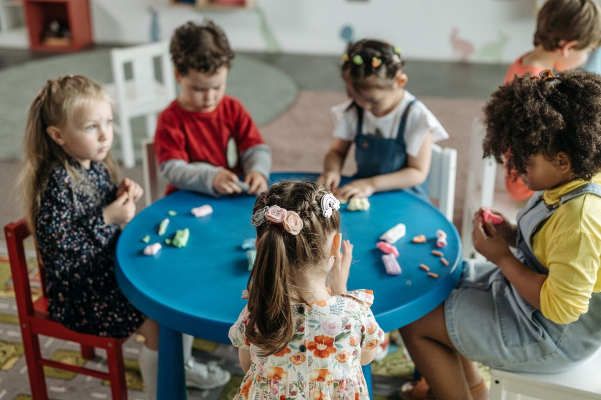

Licensed homeCalifornia family daycare
Licensed family home daycare • Elk Grove, CA
A little more like family
Where little feet leave everlasting footprints.
For the moments you can’t be there, we create a steady, loving rhythm where your child feels secure, cared for, and excited to learn.

✦
Small moments.
Big beginnings.
✓ A licensed, family-style setting
✓ Personal attention in a small group
✓ Clear, caring communication with parents
Care, made personal
Small by design. Thoughtful in every detail.Small group careMore individual attention
Family communicationClear, caring updates
Weekday careMon–Fri · 7:30 AM–6 PM

Welcome to our home
A cozy beginning for your child’s bright future.
At T.L.C. Footprints, every day is shaped around connection, curiosity, and care. In our peaceful Elk Grove home, children are known by name, encouraged at their own pace, and welcomed as part of our daycare family.
Our small-group setting gives children the familiarity they need to settle in, the attention they deserve, and plenty of room for joyful discovery.
Meet our daycare →Thoughtful care, every stage
Rooted in routine.
Inspired by play.
Gentle structure, loving attention, and room to explore, designed around the rhythms of real childhood.
1 month +
Infant care
Responsive, tender care that follows each baby’s individual rhythm.
Learn more →On the move
Toddler care
Safe discovery, growing independence, and lots of loving encouragement.
Learn more →Ready to bloom
Preschool care
Playful learning experiences that help little minds and hearts shine.
Learn more →◌ Learning through play◌ Daily routines & gentle structure◌ Nutritious meals & snacks◌ Outdoor time & creative play
Program availability
A simple way to start the conversation.
Openings can change as children grow and schedules shift. Share the care you need and we’ll let you know the best next step for your family.
Accepting inquiries
- Infant careAsk about openings
- Toddler careAsk about openings
- Preschool careAsk about openings
Now enrolling
Come see why families
feel at home here.
A tour is simply a chance to meet, ask the questions that matter to your family, and see whether T.L.C. Footprints feels like the right fit. No pressure, just a warm welcome.
Schedule your tour →Usually the best next step before enrollment.
A tiny game while you’re here
You’re X. Pick a square.
Family-first care
The details that help
families feel ready.
Choosing care is personal. We make room for the questions, routines, and transition details that matter to your child.
Daily rhythm
Meals and snacks, play, rest, outdoor time, stories, music, and meaningful connection give each day a familiar shape.
Explore daily care →Safety & health
Bring your safety questions to a tour. We’ll walk through the current routines, policies, and care expectations together.
Explore safety →Enrollment clarity
We will discuss availability, tuition, schedules, and what to bring before you decide whether to enroll.
Family resources →A personal visit
There is no substitute for meeting, looking around, and seeing whether the setting feels right for your family.
Request a tour →Helpful details
Questions from
growing families.
Here are a few of the things parents often ask first.
What ages do you accept?−
We welcome children from 1 month through 5 years old, with care tailored to each child’s stage and daily rhythm.
What are your hours?+
We are open Monday through Friday from 7:30 AM to 6:00 PM.
Do you accept Child Action?+
Yes, Child Action is accepted. Please contact us so we can help with the next steps.
How do I schedule a tour?+
Use the tour button above or contact us by phone or email. We will be happy to find a convenient time.